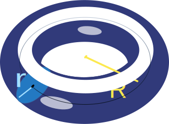
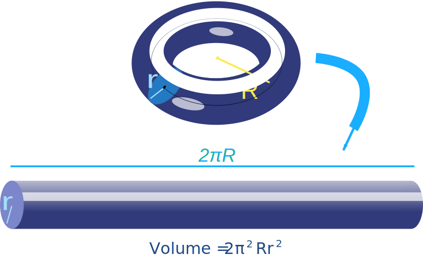
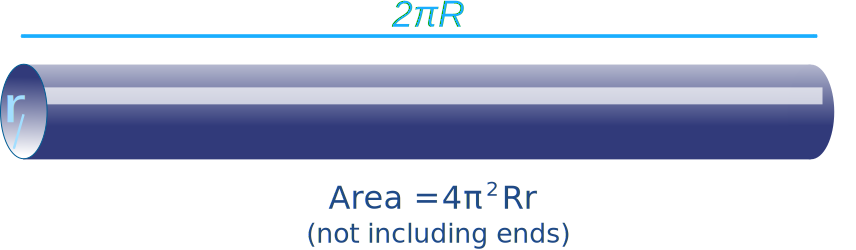
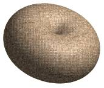
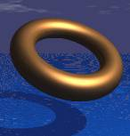
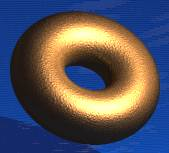

Torus
Go to Surface Area or Volume.
Notice these interesting things:

- It can be made by revolving a
small circle (radius r) along a line made
by a bigger circle (radius R). - It has no edges or vertices
- It is not a polyhedron
Torus in the Sky.
The Torus is such a beautiful solid,
this one would be fun at the beach !
Surface Area
| Surface Area | = (2πR) × (2πr) |
| = 4 × π2 × R × r |
Example: r = 3 and R = 7
The formula is often written in this shorter way:
Surface Area = 4π2Rr
Volume
| Volume |
= (2πR) × (πr2) |
| = 2 × π2 × R × r2 |
Example: r = 3 and R = 7
The formula is often written in this shorter way:
Volume = 2π2 Rr2
Note: Area and volume formulas only work when the torus has a hole!
Like a Cylinder
Volume: the volume is the same as if we "unfolded" a torus into a cylinder (of length 2πR):

As we unfold it, what gets lost from the outer part of the torus is perfectly balanced by what gets gained in the inner part.
Surface Area: the same is true for the surface area, not including the cylinder's bases.


And did you know that Torus was the Latin word for a cushion?(This is not a real roman cushion, just an illustration I made)
The Volume and Area calculations will not work with this cushion because there is no hole.
When we have more than one torus they are called tori
More Torus Images
As the small radius (r) gets larger and larger, the torus goes from looking like a Tire to a Donut: